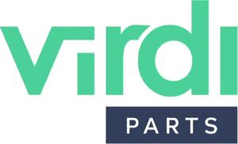

Trade Mark Journal No.2025/040 3 October 2025
WO0000001861095 (7,9,11,12,37)
Office of origin: European Union Intellectual Property Office (EUIPO)
Date of International Registration:26 November 2024
Date of designation in the UK:
26 November 2024

The mark contains the colours green, navy blue and white.
- Class 7
- Spare parts for motors and engines; spare parts for agricultural machines; internal combustion engines, electric motors and spare parts therefor; exhaust systems for vehicles; brake fans for internal combustion engines and electric motors; shock absorbers for machines; generators; ac motors; gears; concrete breakers; turbocompressors; vehicle exhausts and starters and spare parts therefor; mechanical control apparatus for machines, namely for machine engines, brakes, clutches, accelerators and transmission apparatus; filters as parts of machines and engines/motors; filters for filtering machines; filters for internal combustion engines; filters for cleaning cooling air, for engines; fans for cooling vehicle engines; radiators for vehicles; radiators [cooling] for motors and engines; oil coolers for motors; pumps for cooling engines; fuel-powered devices for engines/motors; exhaust silencers; torsion dampers for machines; propeller shafts; fuel and injection devices for internal combustion engines; oil tanks [vehicle engine parts]; expansion tanks [parts of vehicle cooling radiators]; pumps, compressors and blowers for vehicles; ignition apparatus and ignition distributors for engines; sparking-plugs; modular tools for machines; pressure controllers [valves] being parts of machines; bearings [parts of machines].
- Class 9
- Scientific, nautical, surveying, photographic, cinematographic, optical, weighing, measuring, signalling and checking (supervision) apparatus and instruments; apparatus and instruments for conducting, switching, transforming, accumulating, regulating or controlling electricity; apparatus for recording, transmission or reproduction of sound or images; chargers; chargers for electric batteries; portable chargers; batteries for vehicles; battery chargers; global positioning system [GPS] apparatus; camcorders; cameras for vehicles; camcorder covers; radio receivers; sensors, detectors and monitoring instruments for vehicles; lamps for use as warning beacons; sensors for vehicles.
- Class 11
- Lighting and lighting reflectors; lighting apparatus for vehicles; vehicle lighting and lighting reflectors; installations and apparatus for heating, ventilation, air conditioning and air treatment; ventilation and air-conditioning apparatus for vehicles; heating installations, ventilation installations and air conditioners for vehicles; machines for blowing hot and cold air; electrically powered blowing engines for ventilation and air-conditioning purposes; filters for air conditioning.
- Class 12
- Automotive vehicles; land, water and air vehicles; spare parts for motor vehicles; structural parts for vehicles; bodywork parts for vehicles; automobile accessories included in this class; bodies for vehicles; vehicle chassis; modular chassis systems for vehicles; tuning parts for vehicles; axle assemblies for vehicles; brakes, clutches, transmission shafts, gear boxes for vehicles and parts thereof; transmissions for vehicles; engines for vehicles; vehicle shock absorbers; suspension shock absorbers for vehicles; steering systems for vehicles; steering dampers; suspension systems for vehicles and parts thereof; manual and power steering apparatus; apparatus for steering vehicles; hydraulic cylinders and motors; vehicle tires; radiator grilles; torsion dampers for vehicles; petrol tanks for vehicles; reservoirs (metal -) [parts of vehicles]; reservoirs for maintaining the level of fluids in braking systems for vehicles, brake linings, brake discs, brake drums, brake cylinders; brake cables for vehicles; windshield wipers [vehicle parts]; hydraulic control systems for vehicles; bearings [parts of vehicles]; braking systems for vehicles; brake segments for vehicles.
- Class 37
- Services relating to the servicing, repair, maintenance, restoration, refurbishment of vehicles; restoring vehicles, vehicle parts, equipment and accessories to a serviceable condition; repair and restoration of vehicles and vehicle parts, equipment and accessories; providing information relating to the restoration of vehicles and vehicle parts, equipment and accessories; refurbishment and restoration of vehicle spare parts.
INTER CARS S.A.
Representative: SOŁTYSIŃSKI KAWECKI & SZLĘZAK - KANCELARIA RADCÓW PRAWNYCH I ADWOKATÓW, ul. Jasna 26, PL-00-054 Warszawa, POLAND